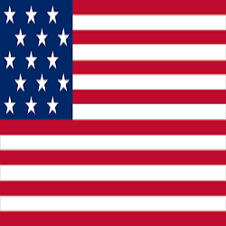
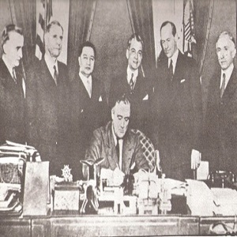
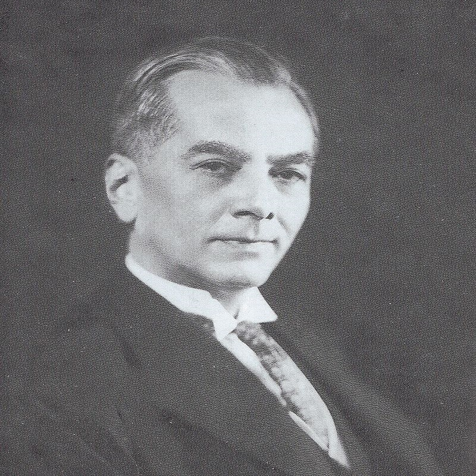
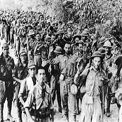
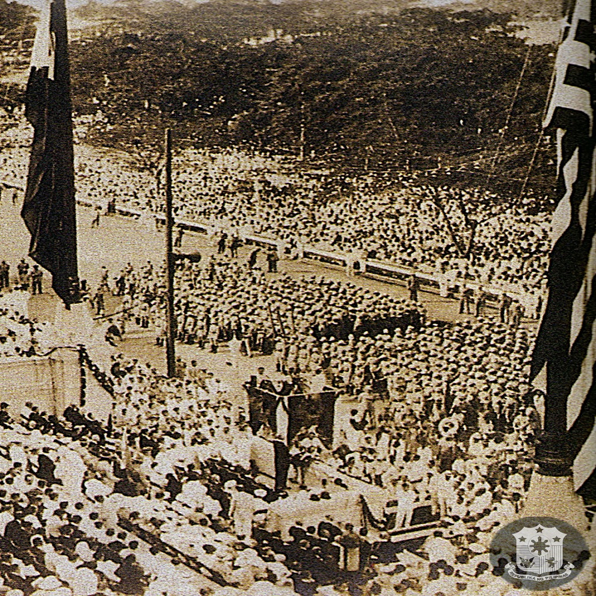

This constitution provided the legal basis of the Commonwealth Government that started the Commonwealth Era led by Manuel L. Quezon and Sergio Osmeña
What is the Constitution
The Constitution holds the ultimate existence of the nation and its people. Furthermore, the aim of the Constitution is to ensure that the people of the nation and the government receive the rights they were promised for.
How it shaped our Nation
The Philippine Constitution has shaped the Philippines and has allowed our nation to become what it is today. It is also to be noted that the Philippines has amended four different Constitutions which not only had great significance during the time period of their implementation but also to the progression of our nation today.
Studying its History
As such, the aim of this discussion is to provide the background of each Constitution and its relevance to the Philippine national issues then and to the current situation of our nation today.
Contributions
These are the contributions provided by the 1935 Constitution.
The following are the events involved in the creation of the 1935 Constitution.

1916
the Jones Act
In 1916, the United States passed the Jones Act specifying that the independence of the Philippines would only be granted upon the formation of a stable government.

1934
Tydings-McDuffie Law
Also known as the Philippine Independence act, was signed to be a U.S. statue for the Philippine's achievement of independence from the United States after a 10-year transitional plan, which would take effect in 1946

1935
The 1935 Constitution
The 1935 Constitution provided the legal basis of the Commonwealth Government that started the Commonwealth Era led by Manuel L. Quezon and Sergio Osmeña which is considered a transitional government in preparation for the achievement of the full independence from the United States provided under the Philippine Independence Act or known as the Tydings-McDuffie Law.

1942
Japanese Colonization of the Philippines
The Commonwealth Era was interrupted by the Japanese colonization of the Philippines in 1942 which resulted in Quezon and Osmeña’s exile in the US. At the same time, the Japanese forces installed a puppet government known as the Second Philippine Republic with Jose P. Laurel as president. At the same time, the Japanese forces installed a puppet government known as the Second Philippine Republic with Jose P. Laurel as president.

1945
The Restoration of the Philippine Commonwealth
The commonwealth government was restored after the liberation of the Philippines by the Allied Forces headed by Douglas MacArthur against the Japanese forces.
The 1935
Constitution
SOURCES
Agoncillo, T., & Alfonso, O. (1969). History of the Filipino People. Malaya Books.guilar, C. (1988). The Marcos Rule and its dynamics of political control. Indian Journal of Asian Affairs, 1(2), 43-57. Retrieved July 21, 2021, from http://www.jstor.org/stable/41950336
Albon, E., et.al. (2017, September 22). Salient features of Constitutions. https://www.studocu.com/es/document/university-of-batangas/bs-accountancy/salient-features-of-constitutions/8671786
Chandrasekhar, A. (2018, December 6). The Purpose Of The Constitution: Why It's Important. Retrieved from https://www.airtract.com/article/the-purpose-of-the-constitution-why-its-important
CIA World Factbook. (1991). Philippines constitutional framework. Retrieved from https://photius.com/countries/philippines/government/philippines_government_constitutional_frame~861.html
Congress.gov.ph(n.d). Philippine Congress History. Retrieved from https://www.congress.gov.ph/about/?about=history
Constitutionnet.org (n.d). Constitutional History of the Philippines.Retrieved from https://constitutionnet.org/country/constitutional-history-philippines
Constitution Of The Philippines (1973). (n.d.). https://www.slideshare.net/sameng/constitution-of-the-philippines-1973-presentation
Filipino.biz. (n.d.). The Malolos Congress. Retrieved from http://msc.edu.ph/centennial/malolos.html
La Viña, T. (2016, September 20). The Travesty of the Constitution. Retrieved from https://manilastandard.net/mobile/article/216640
Malcolm, G. The Malolos Constitution. Political Science Quarterly, 36(1). https://doi.org/10.2307/2142663
Official Gazette of the Republic of the Philippines. (n.d.). The Commonwealth of the Philippines. Retrieved from https://www.officialgazette.gov.ph/the-commonwealth-of-the-philippines/
Official Gazette of the Republic of the Philippines. (n.d.). Constitution Day. Retrieved from https://www.officialgazette.gov.ph/constitutions/constitution-day/#:~:text=In%201899%2C%20the%20Malolos%20Constitution,lasted%20from%201899%20to%201901.&text=The%20Constitution%20was%20submitted%20to,certification%20on%20March%2025%2C%201935.
Philippine History.org. (2020, January 11). The Philippine Revolutionary Government. Retrieved from https://www.philippine-history.org/malolos-congress.htm
Palafox, Q. A. (2012, September 7). The constitution of the Philippine Commonwealth. Retrieved from https://nhcp.gov.ph/the-constitution-of-the-philippine-commonwealth/
The Library of Congress Country Studies. (1991). Philippines constitutional framework. Retrieved from https://photius.com/countries/philippines/government/philippines_government_constitutional_frame~861.html
USA-like Political System
The 1935 Constitution of the Philippines, amended later in 1940, was designed after the American government that features a political system virtually identical to the American system. It calls for a President to be elected for a 4-year term along with the Vice-President without re-election, a bicameral legislature composed of a Senate and House of Representatives, and an independent Judiciary.
Rights of Suffrage
The rights of suffrage were given to male citizens of the country who are twenty-one years of age or over given that they are able to read and write; extension of the right of suffrage to women within two years after the adoption of the constitution.
the SONA
The SONA, as an annual practice we know today, also began during the Commonwealth of the Philippines. The 1935 Constitution as amended, stated in Article VII, Section 5 that:
“[T]he President shall from time to time give to the Congress information on the state of the Nation and recommend to its consideration such measures as he shall judge necessary and expedient.”
Thus, the annual address to the Legislature became known as the State of the Nation Address (SONA). Manuel L. Quezon was the first to deliver a SONA as the President of the Philippines during a special session of the National Assembly on November 25, 1935. In his speech, he mentioned that he was delivering his message in fulfillment of the Constitutional mandate to give a report of “the state of the Nation” to Congress on its opening session. According to him, his priority was to address the first and most urgent need of the country during that time which was the establishment of a national defense policy.
Policies
The 1935 constitution embarked on building policies that targeted great control over the economy, perfection of democratic institutions, reforms in education, improvement of transport, promotion of local capital, industrialization, and the colonization of Mindanao. Unfortunately, uncertainties occurred which brought major problems to the country in terms of the economy due to the great depression or the intense decline in the country’s global economy.
Government Institutions
It is without a doubt that the 1935 constitution throughout its run gave the Philippines a steadfast constitutional government especially at a time when many fellow Asian nations underwent dictatorships or communist revolutions. In fact, it has been considered as the best-written Philippine charter ever (Palafox, 2012).
The Commonwealth, driven by this constitution, started most of the government institutions we have at present such as the Executive Office (1935), Court of Appeals (1935), National Bureau of Investigation (1936), Government Service Insurance System (1936), Department of Health (1940) and more, as well as the policies that call for an all-Filipino supreme court (1935), minimum daily wage (1936), and national language (1939) (Official Gazette, n.d.). This era also reinforced the incorporation of cities under special charters which started during the American colonial period.
The 1935 Constitution
Nonetheless, this does not mean that this constitution did not have its fair share of flaws. Filipinos in the late 1960s believed that it only provided a democratic political cloak for a greatly oligarchic society. This then prompted a constitutional convention held to rewrite the basic law of the land for its improvement by omitting parts that are deemed unsuitable for a genuinely Filipino constitution whilst preserving its democratic core. This, however, was not completed as intended due to Marcos’ declaration of the Martial Law that gave rise to the 1973 constitution (The Library of Congress Country Studies, 1991).